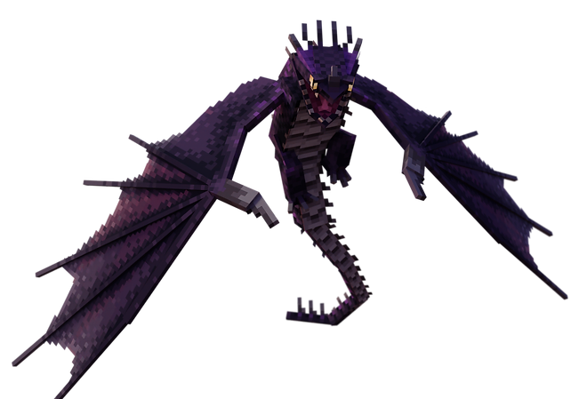
Skrill
foudre incarnéeDescription
§ 1Tirs d'éclairs continus. Frappé par la foudre, il s'électrise et devient redoutable.
Sa lenteur (0.2 sol / 0.17 vol) est compensée par la portée et la persistance de ses éclairs. Treize variantes connues, dont un albinos extrêmement rare (1/100 en S39) et trois variantes ultra-rares ajoutées en S39.
Capacités
§ 2Lightning Bolt
Tir d'éclair (SkrillLightning) — projectile linéaire avec beam tick après impact. Cylindre rayon 1.8. Dégâts initial 18, secondaires 12. Effet Shock 5 s + Cécité 2 s. threshHoldForDeletion 30 (S34).
Lightning Coat — Manteau Électrique
Auto-déclenchée quand le Skrill est frappé par la foudre. Overlay visuel + FIRE_RESISTANCE et DAMAGE_RESISTANCE actifs. Renforce ses capacités offensives et défensives.
Apprivoisement
§ 3Tier III — Par la défaite.
Nourriture : Saumon, morue ou poisson tropical.
Conditions : Le combattre jusqu'à reddition (20 cœurs de dégâts cumulés).
- Engage le combat — ses éclairs sont précis et frappent à distance.
- Inflige-lui 20 cœurs de dégâts cumulés (mécanique surrender, S18).
- Une fois en reddition : invincibilité 2,5 s puis passif 2 minutes.
- Approche-toi avec saumon/morue/poisson tropical et clic droit.
- L'apprivoisement se fait au seuil de la barre.
Reproduction
§ 4Habitat
§ 5Snowy Slopes, Jagged Peaks, Frozen Peaks, Stony Peaks.
Spawn rate : 5 (Uncommon).
Variantes (13)
§ 6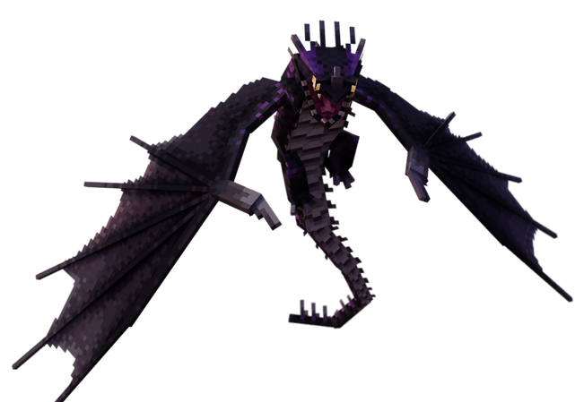
Variant 1
Stormshadow
Noir tempête
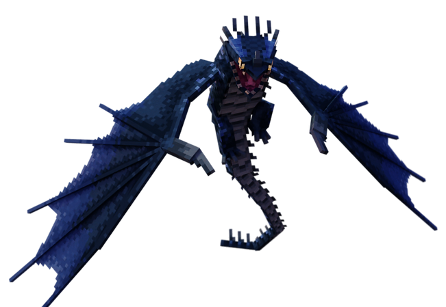
Variant 2
Icebane
Bleu glacé
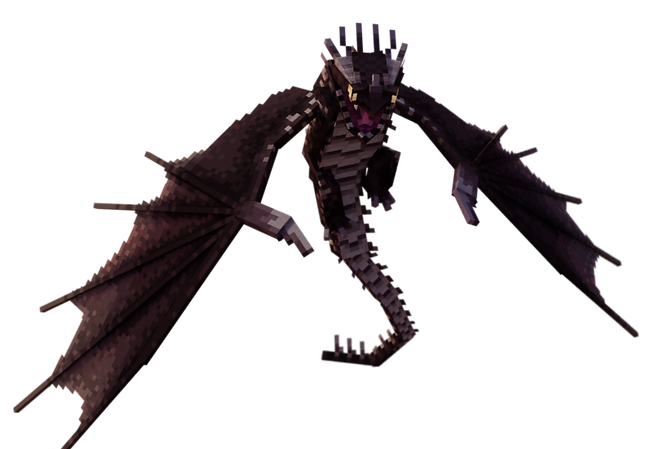
Variant 3
Fryrir
Brun écorce
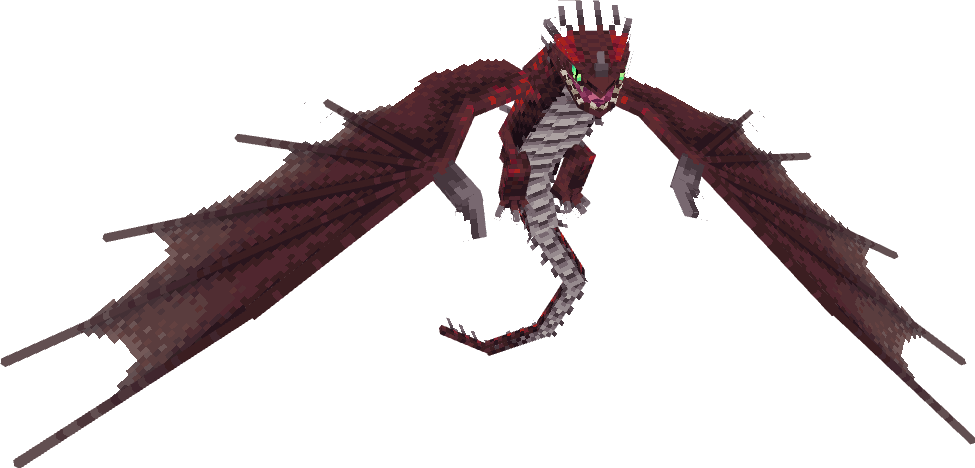
Variant 4
Crimson
Cramoisi sang
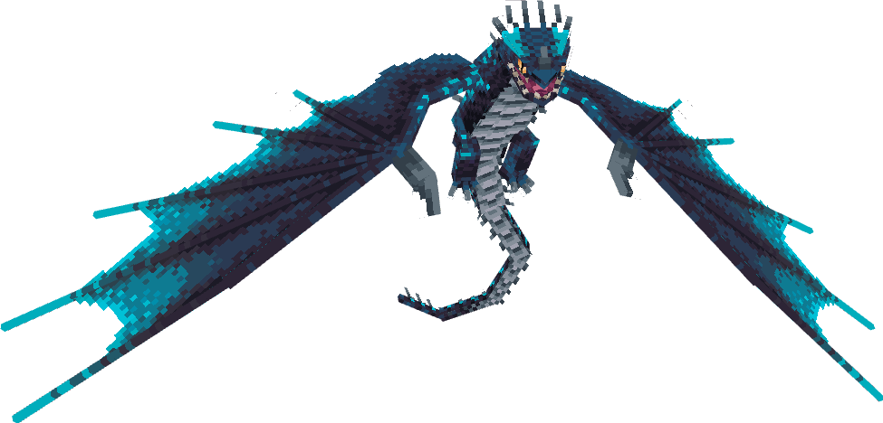
Variant 5
Nemesis
Cyan sombre
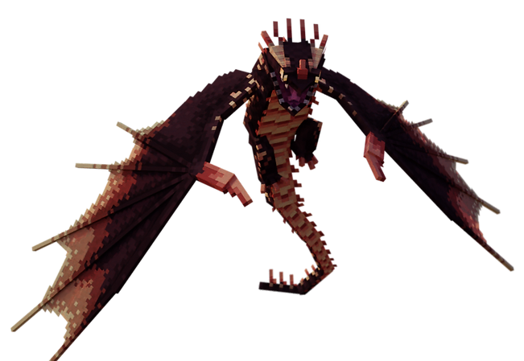
Variant 6
Tempest
Or éclat
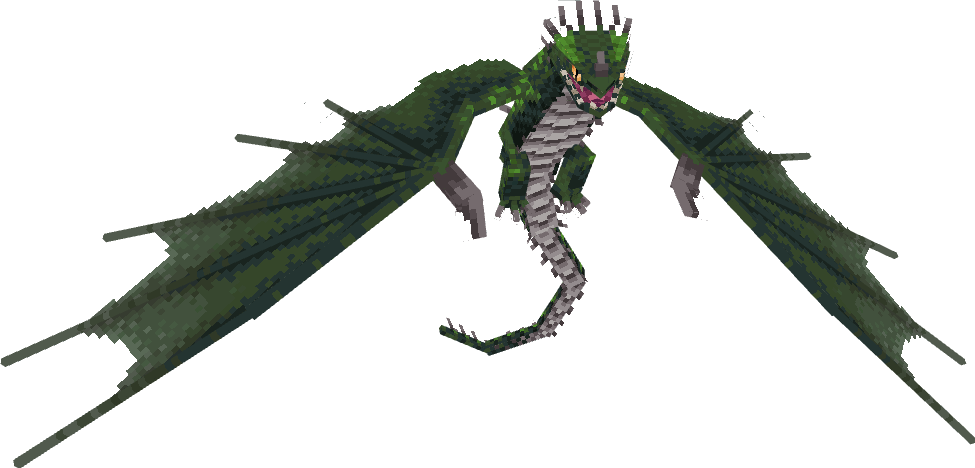
Variant 7
Pickle
Vert acide
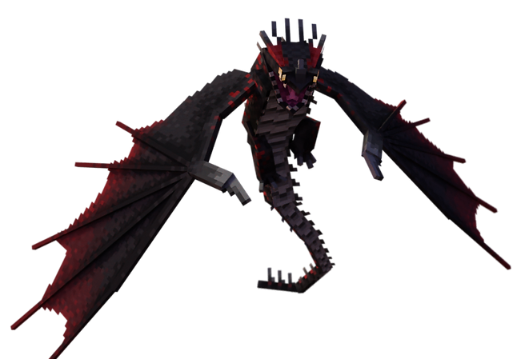
Variant 8
Zen
Rouge profond
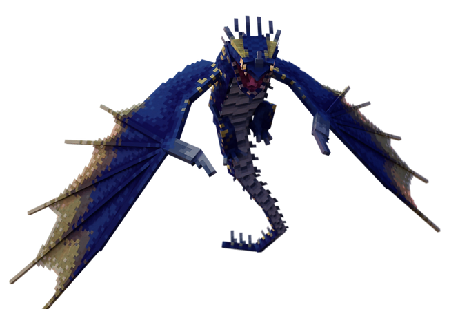
Variant 9
Spark
Jaune solaire
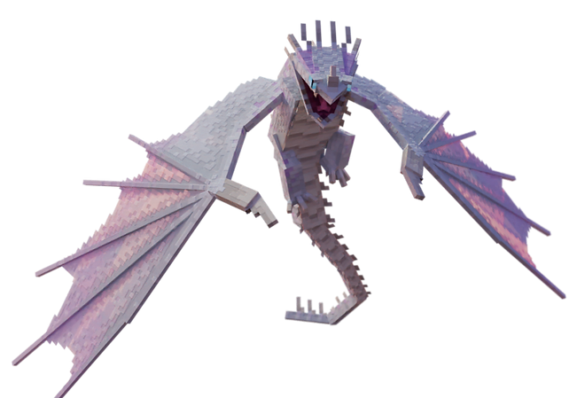
Variant 10
Albino
Blanc immaculé · spawnrate 1/100 (S39)
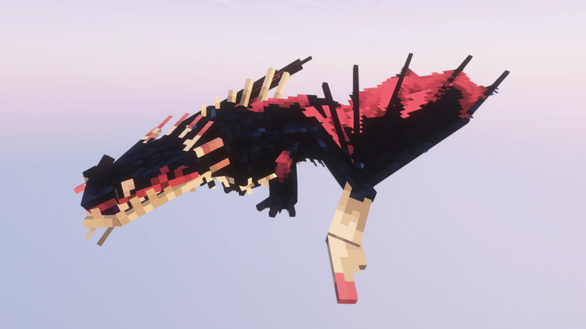
Variant 11
Moonshock
Spawnrate 1/500 (S39)
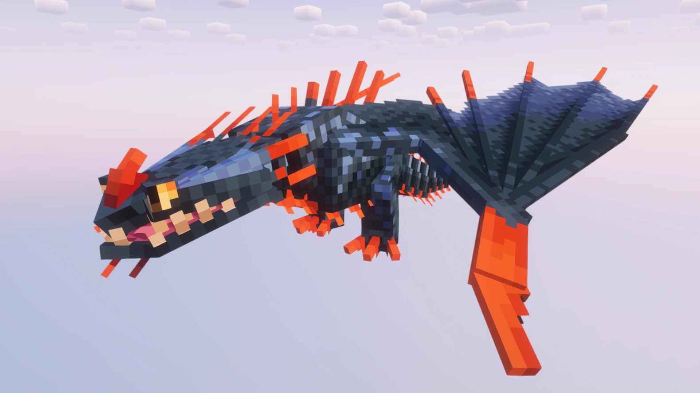
Variant 12
Springstorm
Spawnrate 1/2000 (S39) — extrêmement rare

Variant 13
Skrill
Forme classique du film
Trivia
§ 7- Quand un Skrill est frappé par la foudre, son Lightning Coat s'active automatiquement.
- Variante Albino : spawnrate 1/100 (réduit depuis 1/1000 en S39).
- Variantes rares 10/11/12 ajoutées en S39 — taux 1/100, 1/500, 1/2000.
- Le Skrill ne fuit jamais à bas HP — fierté de prédateur (S34).
- Surrender mechanic identique au Triple Stryke : 20 cœurs → fenêtre d'apprivoisement 2 min.
Commande /summon
§ 8/summon isleofberk:skrill ~ ~ ~ {variant:1}
Variantes 1 à 13.